📘 TOÁN THỰC TẾ BÀI 3 - TÀI LIỆU HỌC TẬP
Môn Toán - Lớp 12
📘 DẠNG TRẮC NGHIỆM
Từ câu 1 - câu 71
Câu 1. Cho hàm số $f(x)$ có bảng biến thiên như sau: 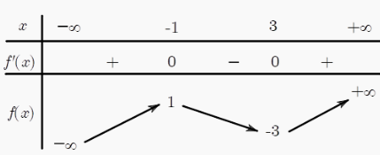 Hàm số đã cho đồng biến trên khoảng nào sau đây?
Hàm số đồng biến trên $(3;+\infty)$
Câu 2. Cho hàm số $y=f(x)$ có đồ thị như hình vẽ. Điểm cực tiểu của đồ thị hàm số đã cho là: 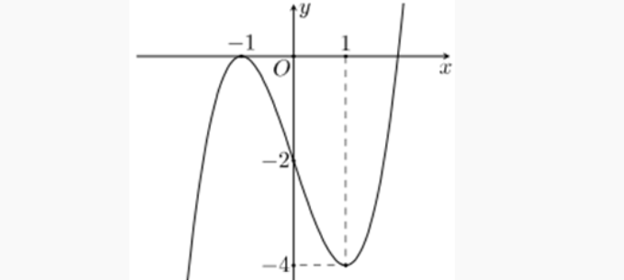
Đồ thị hàm số có điểm cực tiểu $(1;-4)$
Câu 3. Cho hàm số $y=f(x)$ có bảng biến thiên như sau: 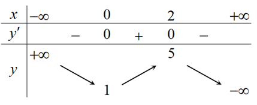 Hàm số đã cho nghịch biến trên khoảng nào dưới đây?
Hàm số nghịch biến trên $(-\infty;0)$ và $(2;+\infty)$
Câu 4. Cho hàm số có đồ thị như hình vẽ: 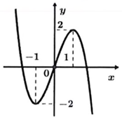 Hàm số đã cho đồng biến trên khoảng nào sau đây?
Dựa vào đồ thị, hàm số đồng biến trên $(-1;1)$
Câu 5. Cho hàm số $y=f(x)$ liên tục trên $\mathbb{R}$ có bảng xét dấu $f'(x)$ như hình vẽ: 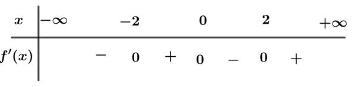 Hàm số đã cho nghịch biến trên khoảng nào dưới đây?
Hàm số nghịch biến trên $(-\infty;-2)$ và $(0;2)$
Câu 6. Cho hàm số $y=f(x)$ liên tục trên $\mathbb{R}$ và có đạo hàm $$f'(x)=(x+1)^3(x-1)(x-2).$$ Số điểm cực trị của hàm số đã cho là
Giải phương trình $f'(x)=0$ và lập bảng biến thiên, suy ra có 3 điểm cực trị
Câu 7. Hàm số $f(x)$ có đạo hàm $f'(x)=x^3(x-1)(x-2)$ với $x\in\mathbb{R}$. Hàm số $f(x)$ có bao nhiêu điểm cực đại?
Nghiệm $x=1$ bội lẻ $\Rightarrow$ cực đại tại $x=1$
Câu 8. Cho hàm số $y=f(x)$ có đồ thị như hình vẽ: 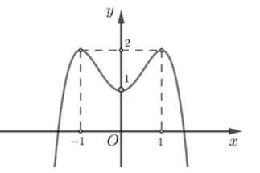 Hàm số đã cho đồng biến trong khoảng nào?
Đồ thị đi lên từ trái sang phải trong $(0;1)$
Câu 9. Cho hàm số $y=f(x)=\dfrac{mx^2+nx+p}{qx+r}$ có bảng biến thiên như hình vẽ: 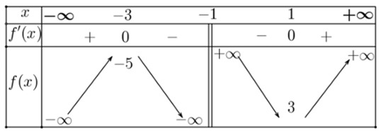 Giá trị cực đại của hàm số đã cho bằng:
Dựa vào bảng biến thiên, giá trị cực đại bằng $-5$
Câu 10. Cho hàm số $y=f(x)=ax^3+bx^2+cx+d$ có đồ thị như hình vẽ: 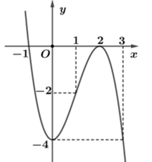 Hàm số $y=f(x)$ đồng biến trên khoảng nào dưới đây?
Đồ thị đồng biến trên $(0;2)$, nên $(0;1)\subset(0;2)$
Câu 11. (THPT Lê Xoay - Vĩnh Phúc 2025) Cho hàm số $y = f(x)$ có đồ thị như hình vẽ. 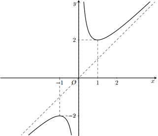 Hàm số đã cho đồng biến trên khoảng nào trong các khoảng dưới đây?
Dựa vào đồ thị hàm số:
1) Sai: Trên khoảng $(0;1)$, đồ thị hàm số đi xuống
2) Đúng: Trên khoảng $(1;2)$, đồ thị hàm số đi lên
3) Sai: Trên khoảng $(-1;1)$, hàm số không đồng biến vì có đoạn nghịch biến
4) Sai: Trên khoảng $(-1;0)$, đồ thị hàm số đi xuống
Câu 12. (Cụm trưởng THPT Bắc Ninh 2025) Cho hàm số $y = f(x)$ có đạo hàm trên $\mathbb{R}$ và đồ thị của hàm số $y = f'(x)$ như hình vẽ. Hàm số $g(x) = f(x) - 2$ nghịch biến trên khoảng nào trong các khoảng sau? 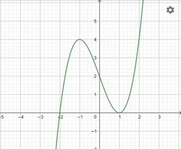
Ta có $g'(x) = f'(x)$. Hàm số $g(x)$ nghịch biến khi $g'(x) < 0 \Leftrightarrow f'(x) < 0$.
1) Sai: Trên $(-1;1)$, đồ thị $f'(x)$ nằm trên trục hoành
2) Đúng: Trên $(-\infty;-2)$, đồ thị $f'(x)$ nằm dưới trục hoành
3) Sai: Trên $(2;+\infty)$, đồ thị $f'(x)$ nằm trên trục hoành
4) Sai: Trên $(1;3)$, đồ thị $f'(x)$ nằm trên trục hoành
Câu 13. (Cụm trưởng THPT Bắc Ninh 2025) Cho hàm số $y = f(x)$ có đồ thị như hình vẽ. Giá trị cực tiểu của hàm số đã cho là 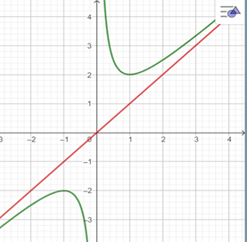
1) Sai: Đây là giá trị cực đại của hàm số
2) Sai: Đây không phải giá trị cực trị của hàm số
3) Đúng: Hàm số đạt cực tiểu tại $x = -1$ và $x = 1$ với giá trị $y = 2$
4) Sai: Đây là hoành độ điểm cực trị, không phải giá trị cực tiểu
Câu 14. (Sở Hà Tĩnh 2025) Hàm số nào dưới đây đồng biến trên khoảng $(-\infty; +\infty)$?
1) Sai: $y' = -3x^2 - 2 < 0, \forall x \in \mathbb{R}$
2) Sai: Hàm số không xác định trên $\mathbb{R}$
3) Đúng: $y' = 9x^2 + 3 > 0, \forall x \in \mathbb{R}$
4) Sai: $y' = 6x^2 - 5$ đổi dấu trên $\mathbb{R}$
Câu 15. (Sở Hà Tĩnh 2025) Cho hàm số $y = f(x)$ có đạo hàm $f'(x) = (x^2 - 4)(x + 2)(x - 3)$ và liên tục trên $\mathbb{R}$. Số điểm cực trị của hàm số là
$f'(x) = 0 \Leftrightarrow (x-2)(x+2)^2(x-3) = 0 \Leftrightarrow \left[\begin{array}{l} x = 2 \ x = -2 \text{ (nghiệm kép)} \ x = 3 \end{array}\right]$
1) Sai: số nghiệm của đạo hàm
2) Đúng: $f'(x)$ đổi dấu khi qua $x = 2$ và $x = 3$
3) Sai: số nghiệm đơn
4) Sai: với số nghiệm của phương trình
Câu 16. (THPT Cẩm Xuyên - Hà Tĩnh 2025) Cho hàm số $y = f(x)$ có bảng biến thiên sau: Giá trị cực tiểu của hàm số $y = f(x)$ là
1) Sai: Đây là hoành độ điểm cực trị
2) Sai: Đây là giá trị cực đại
3) Sai: Đây là hoành độ điểm cực trị
4) Đúng: Tại $x = -2$, hàm số đạt cực tiểu và $y = 5$
Câu 17. (THPT Cẩm Xuyên - Hà Tĩnh 2025) Cho hàm số đa thức bậc ba $y = f(x)$ có đồ thị là đường cong như hình vẽ dưới đây. 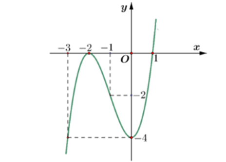 Hàm số $y = f(x)$ đồng biến trên khoảng
1) Sai: Trên $(-2;1)$ hàm số có đoạn nghịch biến
2) Sai: Trên $(-\infty;1)$ hàm số không đồng biến
3) Sai: Trên $(-2;+\infty)$ hàm số có đoạn nghịch biến
4) Đúng: Trên $(-3;-2)$ đồ thị hàm số đi lên
Câu 18. (Sở Vĩnh Phúc 2025) Cho hàm số $f(x)$ liên tục trên $\mathbb{R}$ có đạo hàm $f'(x) = (x + 2)(x - 1), \forall x \in \mathbb{R}$. Hàm số đã cho nghịch biến trên khoảng nào sau đây?
Lập bảng xét dấu $f'(x)$:

2) Sai: $f'(x) > 0$ trên $(-\infty;-2)$
3) Sai: $f'(x)$ không âm trên cả khoảng
4) Sai: $f'(x) > 0$ trên $(1;+\infty)$
Câu 19. (Chuyên KHTN Hà Nội 2025) Cho hàm số $y = f(x)$ có bảng biến thiên sau: 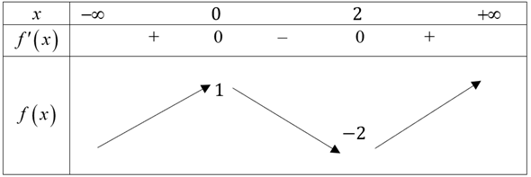 Hàm số đã cho nghịch biến trên khoảng
1) Đúng: Trên $(0;2)$, $f'(x) < 0$
2) Sai: Khoảng không được xét trong bảng
3) Sai: Trên $(-\infty;0)$, $f'(x) > 0$
4) Sai: Trên $(2;+\infty)$, $f'(x) > 0$
Câu 20. (THPT Lê Thánh Tông - HCM 2025) Cho hàm số $y = \log_3(x^2 - 2x + 3)$. Hàm số đồng biến trên khoảng nào sau đây?
TXĐ: $\mathbb{R}$.
$y' = \dfrac{2x - 2}{(x^2 - 2x + 3)\ln 3} = 0 \Leftrightarrow x = 1$
Bảng biến thiên: 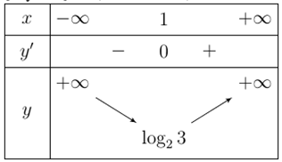 1) Sai: Hàm số nghịch biến trên $(-\infty;1)$
2) Sai: Khoảng xác định không phù hợp
3) Sai: Hàm số nghịch biến trên $(-\infty;1)$
4) Đúng: Hàm số đồng biến trên $(1;+\infty)$
Câu 21. (Chuyên Hạ Long 2025) Cho hàm số $y = ax^4 + bx^3 + cx^2 + dx + e$ có đồ thị hàm số $y = f'(x)$ như hình vẽ dưới đây. Hỏi hàm số $y = f(x)$ có bao nhiêu điểm cực trị? 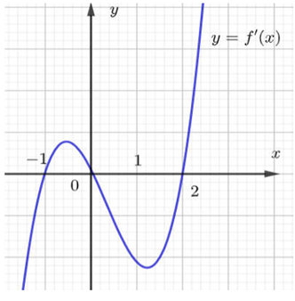
1) Sai: Đồ thị $f'(x)$ cắt trục hoành tại 3 điểm phân biệt
2) Sai: với số điểm cực trị của hàm trùng phương
3) Đúng: $f'(x)$ đổi dấu khi đi qua 3 nghiệm đơn
4) Sai: $f'(x)$ có 3 nghiệm phân biệt
Câu 22. (Chuyên Hạ Long 2025) Cho hàm số $y = f(x)$ xác định trên $\mathbb{R}$ và có bảng biến thiên như sau: 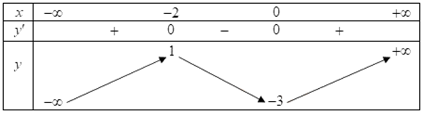 Hàm số $y = f(x)$ nghịch biến trên khoảng nào dưới đây?
1) Sai: Trên $(-3;+\infty)$ hàm số không đơn điệu
2) Đúng: Trên $(-2;0)$, $f'(x) < 0$
3) Sai: Trên $(-\infty;-2)$, $f'(x) > 0$
4) Sai: Khoảng không được xét trong bảng
Câu 23. (Chuyên Thái Bình 2025) Cho hàm số $y = f(x)$ có bảng biến thiên sau: 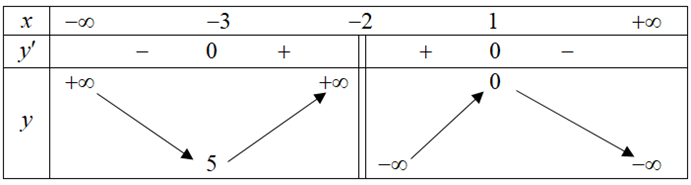 Giá trị cực đại của hàm số $y = f(x)$ là:
1) Đúng: Tại $x = 1$, $y = 0$
2) Sai: Đây là hoành độ điểm cực đại
3) Sai: Đây là giá trị cực tiểu
4) Sai: Đây là giá trị tại một điểm khác
Câu 24. (Chuyên Thái Bình 2025) Cho hàm số $y = f(x)$ có bảng biến thiên như sau: 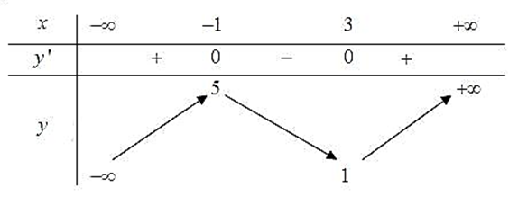 Hàm số đã cho nghịch biến trên khoảng nào dưới đây?
1) Sai: Trên $(1;5)$ hàm số không đơn điệu
2) Sai: Trên $(3;+\infty)$ hàm số đồng biến
3) Đúng: Trên $(-1;3)$, $f'(x) < 0$
4) Sai: Trên $(0;4)$ hàm số không đơn điệu
Câu 25. (Chuyên Vinh 2025) Cho hàm số $y = f(x)$ có bảng biến thiên như sau: 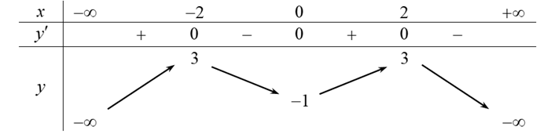 Mệnh đề nào sau đây sai?
1) Đúng: Tại $x = \pm 2$, $y = -1$
2) Đúng: Có 3 điểm cực trị tại $x = -2, 0, 2$
3) Sai: Giá trị cực đại là $3$, không phải $-1$
4) Đúng: Cực đại tại $x = -2$ và $x = 2$
Câu 26. (Sở Thanh Hóa 2025) Cho hàm số $y = f(x)$ có bảng biến thiên sau: 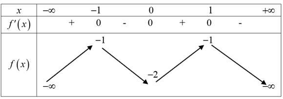 Hàm số đã cho đồng biến trên khoảng nào dưới đây?
Dựa vào bảng biến thiên:
1) Sai: Trên $(-\infty;1)$ hàm số không đồng biến toàn khoảng
2) Sai: Trên $(1;+\infty)$, $f'(x) < 0$ nên hàm số nghịch biến
3) Đúng: Trên $(0;1)$, $f'(x) > 0$ nên hàm số đồng biến
4) Sai: Trên $(-1;0)$, $f'(x) < 0$ nên hàm số nghịch biến
Câu 27. (Cụm trường THPT Hải Dương 2025) Cho hàm số $y = f(x)$ có đạo hàm $f'(x) = (x + 2025)^2(x - 2024), \forall x \in \mathbb{R}$. Hàm số đạt cực trị tại:
$f'(x) = 0 \Leftrightarrow (x+2025)^2(x-2024)=0 \Leftrightarrow \left[\begin{array}{l} x = -2025 \text{ (nghiệm kép)} \ x = 2024 \end{array}\right]$
1) Sai: $x = -2024$ không là nghiệm
2) Sai: $x = -2025$ là nghiệm bội chẵn nên không là cực trị
3) Sai: $x = 2025$ không là nghiệm
4) Đúng: $x = 2024$ là nghiệm đơn nên là điểm cực trị
Câu 28. (Cụm trường THPT Hải Dương 2025) Cho hàm số $y = f(x)$ có bảng biến thiên như sau: 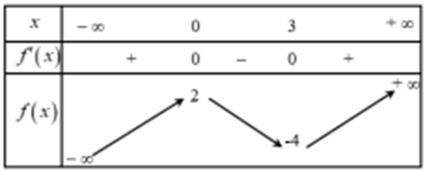 Hàm số $y = f(x)$ đồng biến trên khoảng nào trong các khoảng sau đây?
1) Sai: Trên $(0;3)$, $f'(x) < 0$ nên hàm số nghịch biến
2) Đúng: Trên $(3;+\infty)$, $f'(x) > 0$ nên hàm số đồng biến
3) Sai: Trên $(-\infty;3)$ hàm số không đồng biến toàn khoảng
4) Sai: Trên $(0;+\infty)$ hàm số không đồng biến toàn khoảng
Câu 29. (THPT Trần Nguyên Hãn - Hải Phòng 2025) Cho hàm số $y = f'(x)$ có đồ thị như hình vẽ: 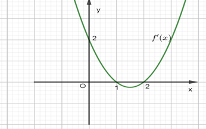 Hàm số $y = f(x)$ nghịch biến trên khoảng nào dưới đây?
$f'(x) < 0 \Leftrightarrow x \in (1;2)$
1) Sai: Trên $(-\infty;0)$, $f'(x) > 0$ nên hàm số đồng biến
2) Sai: Trên $(0;1)$, $f'(x) > 0$ nên hàm số đồng biến
3) Sai: Trên $(0;+\infty)$ hàm số không nghịch biến toàn khoảng
4) Đúng: Trên $(1;2)$, $f'(x) < 0$ nên hàm số nghịch biến
Câu 30. (THPT Trần Phú - Vĩnh Phúc 2025) Cho hàm số $y = f(x)$ xác định trên $\mathbb{R}$ và có đạo hàm $f'(x) = x^{2024}(3-x), \forall x \in \mathbb{R}$. Hàm số đã cho có mấy điểm cực trị?
$f'(x) = 0 \Leftrightarrow x^{2024}(3-x)=0 \Leftrightarrow \left[\begin{array}{l} x = 0 \text{ (nghiệm bội 2024)} \ x = 3 \end{array}\right]$
1) Sai: Có 2 nghiệm nhưng một nghiệm bội chẵn
2) Sai: Hàm số có cực trị
3) Sai: Chỉ có 1 điểm cực trị
4) Đúng: $f'(x)$ đổi dấu khi qua $x=3$ nên có 1 cực trị
Câu 31. (Cụm trưởng Nghệ An 2025) Cho hàm số $f(x)$ liên tục trên $\mathbb{R}$ và có đồ thị như hình vẽ. Điểm cực tiểu của đồ thị hàm số là 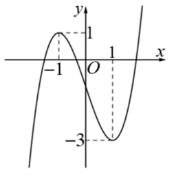
1) Sai: $x=1$ là hoành độ điểm cực tiểu
2) Sai: $N(-1;1)$ là điểm cực đại
3) Đúng: $M(1;-3)$ là điểm cực tiểu của đồ thị
4) Sai: $x=-1$ là hoành độ điểm cực đại
Câu 32. (Cụm trưởng Nghệ An 2025) Cho hàm số $y = f(x)$ xác định với mọi $x \neq 2$ có bảng biến thiên như hình vẽ. Hàm số đồng biến trên khoảng nào trong các khoảng sau? 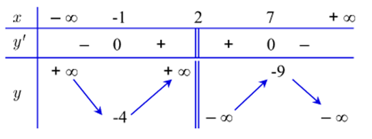
1) Sai: Trên $(-1;7)$ hàm số không đồng biến toàn khoảng
2) Đúng: Trên $(2;7)$, $f'(x) > 0$ nên hàm số đồng biến
3) Sai: Khoảng $(-1;7) \setminus {2}$ chứa khoảng nghịch biến
4) Sai: Trên $(2;+\infty)$ hàm số không đồng biến toàn khoảng
Câu 33. (Sở Vĩnh Phúc 2025) Cho hàm số có đồ thị như hình vẽ sau: 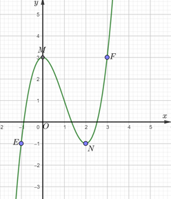 Điểm cực tiểu của đồ thị hàm số đã cho là
1) Sai: $F(3;3)$ là điểm cực đại
2) Sai: $E(-1;-1)$ là điểm cực đại
3) Sai: $M(0;3)$ không phải điểm cực trị
4) Đúng: $N(2;-1)$ là điểm cực tiểu
Câu 34. (Cụm trường Hưng Yên 2025) Cho hàm số $y = f(x)$ có bảng biến thiên như hình vẽ bên dưới. 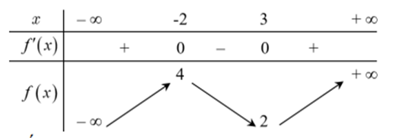 Hàm số $y = f(x)$ đồng biến trên khoảng nào dưới đây:
1) Sai: Khoảng $(-1;2)$ không nằm trong khoảng đồng biến
2) Đúng: $(-8;-3) \subset (-\infty;-2)$ nên hàm số đồng biến
3) Sai: $(-\infty;4)$ chứa khoảng nghịch biến
4) Sai: $(2;+\infty)$ không phải khoảng đồng biến
Câu 35. (Cụm trường Hải Dương 2025) Trong các hàm số cho dưới đây, hàm số nào đồng biến trên $\mathbb{R}$?
1) Sai: Cơ số $\frac{2024}{2025} < 1$ nên hàm số nghịch biến
2) Sai: Hàm số logarit không xác định trên $\mathbb{R}$
3) Sai: Hàm số logarit không xác định trên $\mathbb{R}$
4) Đúng: Cơ số $e > 1$ nên hàm số đồng biến trên $\mathbb{R}$
Câu 36. (Cụm trường Hải Dương 2025) Cho hàm số $y = f(x)$ có bảng biến thiên như sau: 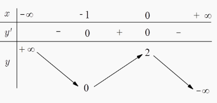 Khẳng định nào dưới đây là đúng?
1) Sai: Trên $(-1;+\infty)$ hàm số không nghịch biến toàn khoảng
2) Đúng: Trên $(-1;0)$, $f'(x) > 0$ nên hàm số đồng biến
3) Sai: Trên $(-\infty;0)$ hàm số không nghịch biến toàn khoảng
4) Sai: Trên $(0;2)$ không được xét trong bảng
Câu 37. (Sở Thừa Thiên Huế 2025) Cho hàm số $y = f(x)$ có bảng biến thiên như sau: 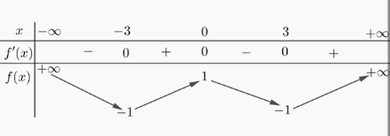 Hàm số đã cho đồng biến trên khoảng nào dưới đây?
1) Sai: Trên $(-\infty;-3)$, $f'(x) < 0$ nên hàm số nghịch biến
2) Sai: Trên $(-3;3)$ hàm số không đồng biến toàn khoảng
3) Sai: Trên $(0;3)$, $f'(x) < 0$ nên hàm số nghịch biến
4) Đúng: Trên $(-3;0)$, $f'(x) > 0$ nên hàm số đồng biến
Câu 38. (Chuyên Lê Khiết - Quảng Ngãi 2025) Cho hàm số có đồ thị như hình vẽ bên. Hàm số đã cho nghịch biến trên khoảng nào sau đây? 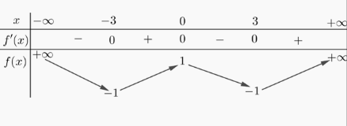
1) Đúng: Trên $(-1;1)$, đồ thị hàm số đi xuống
2) Sai: Trên $(-\infty;1)$ hàm số không nghịch biến toàn khoảng
3) Sai: Trên $(-\infty;-1)$ đồ thị hàm số đi lên
4) Sai: Trên $(-1;+\infty)$ hàm số không nghịch biến toàn khoảng
Câu 39. (Chuyên Hoàng Văn Thụ - Hòa Bình 2025) Cho hàm số $y = f(x)$ có bảng biến thiên như sau: 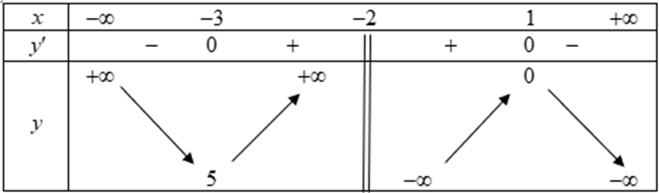 Giá trị cực đại của hàm số $y = f(x)$ là:
1) Đúng: Tại $x=0$, $y=0$ là giá trị cực đại
2) Sai: $1$ là hoành độ điểm cực tiểu
3) Sai: $-3$ là giá trị cực tiểu
4) Sai: $5$ không phải giá trị cực trị
Câu 40. (THPT Sào Nam - Quảng Nam 2025) Cho hàm số $y = f(x)$ xác định, có đạo hàm trên $\mathbb{R}$ và $f'(x)$ có đồ thị như hình vẽ bên dưới: 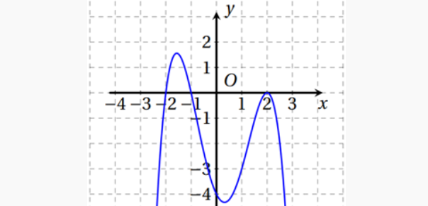 Mệnh đề nào sau đây sai?
1) Đúng: Trên $(-1;0)$, $f'(x) < 0$ nên hàm số nghịch biến
2) Đúng: Trên $(-5;-2)$, $f'(x) < 0$ nên hàm số nghịch biến
3) Sai: Trên $(-2;+\infty)$, $f'(x)$ không dương toàn khoảng (có đoạn âm)
4) Đúng: Trên $(1;2)$, $f'(x) < 0$ nên hàm số nghịch biến
Câu 41. Cho hàm số $f(x)$ có bảng biến thiên: 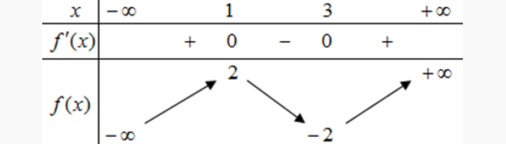 Hàm số đã cho đạt cực tiểu tại điểm nào sau đây ?
Câu 42. Cho hàm số $y = f(x)$ liên tục trên đoạn [–4; 3] và có đồ thị như hình vẽ. Hàm số $y=f(x)$ có số điểm cực trị là 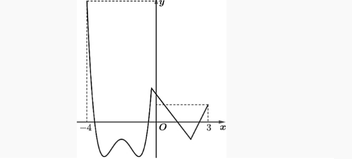
Câu 43. Giá trị cực đại của hàm $y = x^3 - 3x+1$ bằng
Câu 44. Giá trị cực đại hàm số $y = x^3 - 12x - 1$ bằng
Câu 45. Điểm cực đại của đồ thị hàm số $y = -x^3 - 3x^2 + 1$ là
Câu 46. Cho hàm số $y=f(x)$ có đồ thị được cho như hình sau: 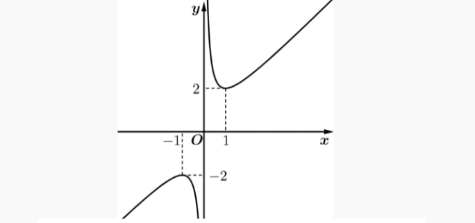 Giá trị cực đại của hàm số đã cho là
Câu 47. Điểm cực tiểu của đồ thị hàm số $y = -x^4 + 2x^2 + 5$ là
Câu 48. Giá trị của tiểu của hàm số $y = -x^4+2x^2+2$ bằng
Câu 49. Hàm số $y = \frac{x+1}{2x-1}$ có bao nhiêu điểm cực trị ?
Câu 50. Cho hàm số $y=f(x)$ xác định, liên tục trên các khoảng $(-\infty;1), (1;+\infty)$ và có bảng xét dấu đạo hàm như sau: Số điểm cực trị của đồ thị hàm số $y=f(x)$ là
Câu 51. Cho hàm số $y=f(x)$ liên tục trên $\mathbb{R}$, có đạo hàm $f'(x) = x(1-x)^2(3-x)^3(x-2)^4$. Điểm cực tiểu của hàm số $y=f(x)$ là
Câu 52. Cho hàm số $y=f(x)$ liên tục trên $\mathbb{R}$ và có đạo hàm $f'(x) = (x+2)(x-1)^{2024}(x-2)^{2025}$. Khẳng định nào đúng ?
Câu 53. Cho hàm số $y = \frac{x^2+x+1}{x+1}$. Điểm cực tiểu của hàm số đã cho là
Câu 54. Cho hàm số $y = \frac{x^2+3}{x+1}$. Mệnh đề nào dưới đây đúng?
Câu 55. Gọi $A, a$ lần lượt là giá trị cực đại, giá trị cực tiểu của hàm số $y = \frac{x^2+3x+3}{x+2}$. Giá trị của $A^2-2a$ bằng
Câu 56. Giá trị cực đại của $y = \sqrt{3-2x-x^2}$ bằng
Câu 57. Cực đại của hàm số $y = x\sqrt{1-x^2}$ bằng
Câu 58. Khoảng cách giữa hai điểm cực trị của đồ thị hàm số $y=x^3+3x^2-3$ bằng
Câu 59. Tọa độ trung điểm của hai điểm cực trị của đồ thị hàm số $y=x^3+3x^2+3$ là
Câu 60. Gọi $A, B$ lần lượt là hai điểm cực tiểu của đồ thị hàm số $y=x^4-2x^2+3$ và $C$ là điểm cực đại. Tọa độ trọng tâm tam giác $ABC$ là
Câu 61. Gọi $A, B$ là hai điểm cực trị của đồ thị hàm số $y = x^3-6x^2+9x-1$. Tìm tọa độ trọng tâm $G$ của tam giác $OAB$ với $O$ là gốc tọa độ.
Câu 62. Đồ thị hàm số $y=x^3-3x+2$ có hai điểm cực trị $A, B$. Diện tích tam giác $OAB$ với $O(0;0)$ là gốc tọa độ bằng
Câu 63. Gọi $A, B, C$ là ba điểm cực trị của đồ thị hàm số $y = 2x^4 - 4x^2+1$. Diện tích của tam giác $ABC$ bằng
Câu 64. Cho hàm số $y = \frac{2x^2-x+7}{x-1}$ có đồ thị (C). Biết rằng (C) có hai điểm cực trị, tính khoảng cách từ điểm $O$ đến đường thẳng đi qua hai điểm cực trị đó.
Câu 65. Có bao nhiêu giá trị nguyên của tham số $m$ sao cho hàm số $f(x) = \frac{1}{3}x^3+mx^2+4x+3$ đồng biến trên $\mathbb{R}$ ?
Câu 66. Cho hàm số $y=-x^3-mx^2+(4m+9)x+5$ với $m$ là tham số. Hỏi có bao nhiêu giá trị nguyên của $m$ để hàm số nghịch biến trên khoảng $(-\infty;+\infty)$ ?
Câu 67. Tìm các giá trị của $m$ để hàm số $f(x) = (m^2-4)x^3+3(m-2)x^2+3x-4$ đồng biến trên $\mathbb{R}$?
Câu 68. Hỏi có bao nhiêu số nguyên của tham số $m$ để hàm số $y=(m^2-1)x^3+(m-1)x^2-x+4$ nghịch biến trên khoảng $(-\infty;+\infty)$ ?
Câu 69. Tất cả các giá trị $m$ sao cho hàm số $f(x) = \frac{x-m}{x+1}$ đồng biến trên từng khoảng xác định là
Câu 70. Tìm tất cả giá trị $m$ để hàm số $y = \frac{mx+4m}{x+m}$ nghịch biến trên từng khoảng xác định ?
Câu 71. Tìm tham số $m$ để hàm số $y = \frac{mx-3m+4}{x+m}$ nghịch biến trên khoảng $(-2;0)$ ?
Câu 72. Có bao nhiêu giá trị nguyên của tham số thực $m$ sao cho hàm số $y = \frac{mx+4m}{x+m}$ nghịch biến trên từng khoảng xác định của nó ?
Câu 73. Cho hàm số $y=2x^3-(m-2)x^2+(6-3m)x$. Có bao nhiêu giá trị nguyên của $m$ thỏa mãn $|m|<20$ sao cho hàm số có 2 điểm cực trị ?
Câu 74. Có bao nhiêu giá trị nguyên của $m \in (-9;9)$ để hàm số $y=x^3-3x^2+2mx+m$ không có điểm cực trị ?
Câu 75. Cho hàm số $y=x^3-3mx^2+3mx+m^2$. Có bao nhiêu giá trị nguyên của $m \in (-5;5)$ để hàm số có 2 điểm cực trị ?
Câu 76. Cho hàm số $y = \frac{1}{3}x^3-mx^2+(m^2-4)x+3$. Tìm $m$ để hàm số đạt cực đại tại điểm $x=3$.
Câu 77. Cho hàm số $y=\frac{1}{3}x^3-mx^2+(m^2-4)x+3$. Hàm số đạt cực tiểu tại điểm $x=3$ thì $m$ bằng
Câu 78. Cho hàm số $y=\frac{x^3}{3}-mx^2+(m^2-m+1)x$. Tìm $m$ để hàm đạt cực đại tại điểm $x=1$.
Câu 79. Hàm số $y=x^3+2ax^2+4bx-2029$ đạt cực trị tại điểm $x=-1$. Khi đó hiệu $a-b$ bằng
Câu 80. Cho hàm số $y=x^3-2x^2+ax+b$ có đồ thị (C). Biết đồ thị (C) có điểm cực trị là $A(1;3)$. Giá trị của $4a-b$ bằng
Câu 81. Đồ thị hàm số $y=x^3+ax^2+bx+c$ đi qua điểm $A(1;0)$ và có điểm cực trị $M(-2;0)$. Giá trị của biểu thức $a^2+b^2+c^2$ bằng
Câu 82. Biết $M(-1;18)$ và $N(3;-16)$ là hai điểm cực trị của đồ thị hàm số $y = ax^3+bx^2+cx+d$. Tính $S=a+b+c+d$.
Câu 83. Biết $M(1;-6)$ là điểm cực đại của đồ thị hàm số $y=2x^3+bx^2+cx+1$. Tìm tọa độ điểm cực tiểu của đồ thị hàm số đó.
Câu 84. Cho hàm số $y=\frac{1}{3}x^3-mx^2-x$. Tìm tham số $m$ để hàm số có 2 điểm cực trị $x_1$ và $x_2$ thỏa mãn $x_1^2+x_2^2-x_1x_2=7$.
Câu 85. Biết hàm số $y=\frac{1}{3}x^3-(m+1)x^2-(2m-1)x$ có hai điểm cực trị $x_1, x_2$. Giá trị nhỏ nhất của biểu thức $P = x_1^2+x_2^2-10(x_1+x_2)$ bằng
Câu 86. Tìm tất cả các tham số $a$ để hàm số $y=\frac{x^2-ax-a^2-2a-3}{x-1}$ có hai điểm cực trị.
Câu 87. Tìm tất cả tham số $m$ để hàm số $y=\frac{x^2+mx+1}{x+m}$ đạt cực đại tại $x=2$.
Câu 88. Cho các tham số $a, b$ để hàm số $y=\frac{ax^2+bx+ab}{ax+b}$ đạt cực trị tại hai điểm $x=0$ và $x=4$. Hãy tính $P=a^2+b^2-ab$.
Câu 89. Cho hàm số $f(x)=x+m+\frac{n}{x+1}$. Có bao nhiêu cặp số $(m;n)$ để đồ thị hàm số có điểm cực đại là $(-2;-2)$.
Câu 1. Cho hàm số bậc ba $y = f(x)$ có đồ thị là đường cong trong hình dưới đây. 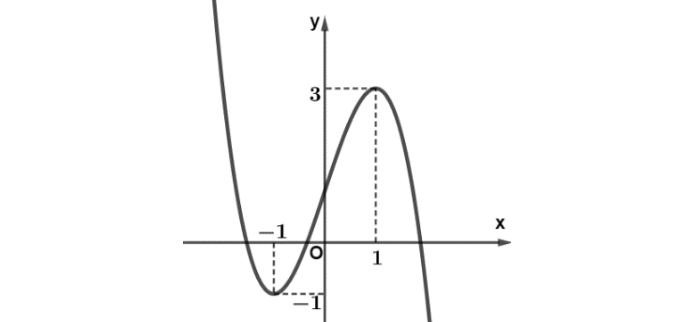
- Sai. Hàm số nghịch biến trên các khoảng $(-\infty;-1)$ và $(1;+\infty)$. Vì hàm số đồng biến trên các khoảng $(-\infty;-1)$ và $(1;+\infty)$.
- Sai. Đồ thị hàm số có điểm cực tiểu là $(-1;-1)$.
- Đúng. Gọi a và b lần lượt là hoành độ của điểm cực tiểu và điểm cực đại của hàm số ta có $a^2+b^2 = 10$. Vì tung độ của điểm cực tiểu là $a=-1$ và điểm cực đại là $b=3$ nên $a^2+b^2=10$.
- Đúng. Phương trình đường thẳng đi qua hai điểm cực trị của đồ thị hàm số là $(d): x-y+2=0$. Vì đồ thị hàm số có hai điểm cực trị là $A(-1;1)$; $B(1;3)$. Phương trình đường thẳng đi qua hai điểm A, B là: $(d): \dfrac{x+1}{2}=\dfrac{y-1}{2} \Leftrightarrow x-y+2=0$.
Câu 2. Cho hàm số $y=f(x)$ liên tục trên $\mathbb{R}$ và có đạo hàm $f'(x)=(x+1)(x-3)x^2$.
- Sai. Vì $f'(x)=(x+1)(x-3)x^2 = 0 \Leftrightarrow \begin{cases} x=-1 \\ x=3 \\ x=0 \end{cases}$. Tuy nhiên $x=0$ là nghiệm bậc chẵn của $f'(x)$ nên $x=0$ không là điểm cực trị.
- Đúng. Cho $f'(x)<0 \Leftrightarrow (x+1)(x-3)x^2<0 \Leftrightarrow (x+1)(x-3)<0 \Leftrightarrow x^2-2x-3<0 \Leftrightarrow -1
- Sai. Cho $f'(x)>0 \Leftrightarrow (x+1)(x-3)x^2>0 \Leftrightarrow (x+1)(x-3)>0 \Leftrightarrow x^2-2x-3>0 \Leftrightarrow \begin{cases} x<-1 \\ x>3 \end{cases}$. Ta lập được bảng biến thiên: Theo bảng biến thiên thì $-1<3$ nhưng $f(-1)>f(3)$ nên hàm số $y=f(x)$ không thể đồng biến trên $(-\infty;-1] \cup [3;+\infty)$.
- Đúng. Do $f'(x)=(x+1)(x-3)x^2$ nên ta có $y'=[f(3x)]' = 3f'(3x) = 3(3x+1)(3x-3)(3x)^2 = 27x^2(3x+1)(3x-3)$. Điều kiện hàm $y=f(3x)$ nghịch biến là $y'<0 \Leftrightarrow 27x^2(3x+1)(3x-3)<0 \Leftrightarrow -\dfrac{1}{3}
Câu 3. Cho hàm số $f(x)$ có bảng biến thiên như sau:

- Đúng. Giá trị cực đại của hàm số bằng 3.
- Sai. Hàm số đồng biến trên các khoảng $(-2;0)$ và $(2;+\infty)$.
- Đúng. vì hàm số nghịch biến trên khoảng $(-\infty;-2)$ nên $f(-10)>f(-3)$.
- Đúng. Đồ thị hàm số có ba điểm cực trị $A(0;3), B(-2;1), C(2;1)$. Tam giác $ABC$ cân ở A. Gọi $H(0;1)$ là trung điểm đoạn $BC$. Ta có $AH=2, BC=4$. Diện tích $ABC$ là $S=\dfrac{1}{2}AH \cdot BC = 4$.
Câu 4. Cho hàm số $y=f(x)$ có bảng biến thiên như sau

- Sai. Vì hàm số đồng biến trên các khoảng $(-1;0)$ và $(1;+\infty)$.
- Đúng. Vì hàm số đồng biến trên các khoảng $(-1;0)$ và $(1;+\infty)$.
- Đúng. Vì đồ thị hàm số có hai điểm cực trị với hoành độ không âm là $A(0;3)$ và $B(1;0)$ nên đường thẳng đi qua hai điểm cực trị của đồ thị hàm số với hoành độ không âm là $\dfrac{x}{1}+\dfrac{y}{3}=1$.
- Đúng. Vì đồ thị hàm số có hai điểm cực trị với hoành độ không âm là $A(0;3)$, $B(1;0)$ và $C(-1;0)$ nên diện tích tam giác $ABC$ là $S=\dfrac{1}{2}|y_A-y_B| |x_B-x_C|=\dfrac{1}{2}|3-0| |1+1|=3$.
Câu 5. Đồ thị hàm số $y=f(x)=x^3-3x$.
$y=f(x)=x^3-3x$ có $f'(x)=3x^2-3; f'(x)=0 \Leftrightarrow \begin{cases} x=-1 \\ x=1 \end{cases}$. BXD: Từ BXD ta thấy
- Sai.
- Đúng.
- Sai. (Do y' đổi dấu từ - sang + khi qua 1 nên x=1 là điểm cực tiểu).
- Sai. Ta có đồ thị có 2 điểm cực trị là $A(-1;2), B(1;-2)$ có pt đường thẳng qua 2 điểm A, B là $2x+y=0$ nên điểm $M(0;-1)$ không thuộc đường thẳng AB.
Câu 6. Cho hàm số $y=f(x)$ xác định trên $\mathbb{R}$ và có bảng biến thiên như hình bên dưới. 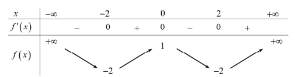 Các khẳng định sau đây đúng hay sai?
- Đúng. Dựa vào BBT, ta có: $f'(x)>0, \forall x \in (-2;0)$. Suy ra $f(x)$ đồng biến trên khoảng $(-2;0)$. Vậy a) đúng.
- Sai. Tương tự b) sai.
- Đúng. Trên khoảng $(2;+\infty)$ hàm số đồng biến nên $\forall x_1, x_2 \in (2;+\infty), x_1 < x_2 \Rightarrow f(x_1) < f(x_2)$. Do đó c) đúng.
- Sai. Theo BBT, ta có $f(-2)=f(2)=-2$ nên d) sai.
Câu 7. Cho hàm số $y=f(x)$ xác định trên $\mathbb{R}$ và có đạo hàm $f'(x)$. Đồ thị của hàm số $f'(x)$ như hình dưới đây.
 Các mệnh đề sau đúng hay sai?
Các mệnh đề sau đúng hay sai?
Từ đồ thị của hàm số $f'(x)$ ta có $f'(x)=0 \Leftrightarrow \begin{cases} x=-1 \\ x=1 \\ x=2 \end{cases}$. Bảng biến thiên
- sai. Từ bảng biến thiên ta thấy hàm số $y=f(x)$ đồng biến trên khoảng $(-\infty;0)$ là sai.
- đúng. Từ bảng biến thiên ta thấy hàm số $y=f(x)$ đồng biến trên khoảng $(-1;1)$ là đúng.
- đúng. Từ bảng biến thiên ta thấy hàm số $y=f(x)$ có ba điểm 3 điểm cực trị là đúng.
- sai. Ta có $y=f(3-x^2)$ $y' = -2x.f'(3-x^2)$. $y'=0 \Leftrightarrow \begin{cases} x=0 \\ f'(3-x^2)=0 \end{cases} \Leftrightarrow \begin{cases} x=0 \\ 3-x^2 = -1 \\ 3-x^2 = 1 \\ 3-x^2 = 2 \end{cases} \Leftrightarrow \begin{cases} x=0 \\ x=\pm 2 \\ x=\pm\sqrt{2} \\ x=\pm 1 \end{cases}$. Do $y'=0$ có 7 nghiệm phân biệt nên hàm số $y=f(3-x^2)$ có 7 điểm cực trị. Vậy d) sai.
Câu 8. Cho hàm số $f(x) = \ln x, \forall x \in (0;+\infty)$. Các mệnh đề sau đúng hay sai?
- Đúng. Ta có: $y' = f'(x) = (\ln x)' = \dfrac{1}{x} > 0, \forall x \in (0;+\infty)$. Vậy hàm số luôn đồng biến trên tập xác định.
- Đúng. Ta có: $f(x^2-2x) = \ln(x^2-2x)$. ĐKXĐ: $x^2 - 2x > 0 \Leftrightarrow \begin{cases} x>2 \\ x<0 \end{cases}$. Vậy $D=(-\infty;0) \cup (2;+\infty)$.
- Sai. Ta có: $[f(x^2-2x)]' = [\ln(x^2-2x)]' = \dfrac{2x-2}{x^2-2x}, \forall x \in (-\infty;0) \cup (2;+\infty)$. Xét $[f(x^2-2x)]' = 0 \Leftrightarrow \dfrac{2x-2}{x^2-2x}=0 \Leftrightarrow x=1$ (KTĐK). Vậy hàm số không có cực trị.
- Sai. Ta có: $y = f(x^2-mx) = \ln(x^2-mx)$ đồng biến trên khoảng $(3;+\infty)$. ycbt $\Leftrightarrow \begin{cases} x^2-mx > 0 \\ [f(x^2-mx)]' = \dfrac{2x-m}{x^2-mx} \ge 0 \end{cases}, \forall x \in (3;+\infty)$. ycbt $\Leftrightarrow \begin{cases} x>m \\ x > \dfrac{m}{2} \end{cases} \Leftrightarrow x>m, \forall x \in (3;+\infty) \Leftrightarrow m \le 3$. Do $m$ là số nguyên dương nên $m \in \{1;2;3\}$. Có ba giá trị nguyên dương của $m$.
Câu 9. Cho hàm số $y=f(x) = \dfrac{-x^2+2x+2}{x+1}$. Các khẳng định sau đây đúng hay sai?
- Đúng. Tập xác định: $D = \mathbb{R} \setminus \{-1\}$. Ta có: $y' = \dfrac{-x^2-2x}{(x+1)^2}; y'=0 \Leftrightarrow x=0$ hoặc $x=-2$. Bảng biến thiên: Từ bảng biến thiên, ta suy ra hàm số nghịch biến trên các khoảng $(-\infty;-2)$ và $(0;+\infty)$ Vậy hàm số nghịch biến trên khoảng $(-\infty;-5)$ là khẳng định đúng.
- Sai. Hàm số đồng biến trên khoảng $(-2;0)$ là khẳng định sai vì $y=f(x)$ không xác định tại $x=-1 \in (-2;0)$.
- Sai. Hàm số nghịch biến trên khoảng $(1;+\infty)$ nên với mọi $a,b \in (1;+\infty)$ và $a
- Đúng. Đường thẳng AB có phương trình: $y = \dfrac{(-x^2+2x+2)'}{(x+1)'} = -2x+2$. Phương trình hoành độ giao điểm của AB và Ox có dạng: $-2x+2=0 \Leftrightarrow x=1$. Vậy AB cắt Ox tại điểm $M(1;0)$. Vậy khẳng định d đúng.
Câu 10. Cho hàm số $y=f(x)$ có bảng biến thiên như hình vẽ. 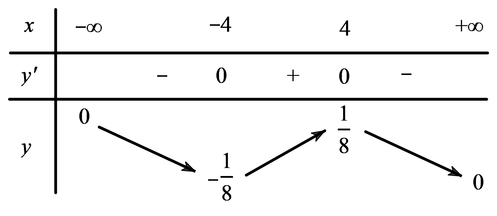 Các khẳng định sau đúng hay sai?
- Đúng. Từ bảng biến thiên, ta có $y'<0$ trên khoảng $(4;+\infty)$.
- Sai. Từ bảng biến thiên, ta có $y'>0$ trên khoảng $(-4;4)$ và $y'<0$ trên khoảng $(4;+\infty)$.
- Đúng. Từ bảng biến thiên, ta có trên khoảng $(-4;4)$ đồ thị hàm số có hướng đi lên từ trái qua phải nên hàm số đồng biến.
- Đúng. Vì dựa vào bảng biến thiên ta thấy hàm số nghịch biến trên khoảng $(4;+\infty)$.
Câu 11. Cho hàm số $y=f(x)$ có đồ thị như hình vẽ 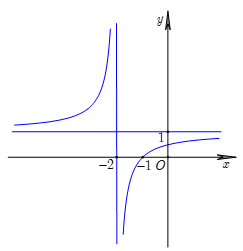 Các khẳng định sau đúng hay sai?
- Đúng. Từ đồ thị hàm số, ta có hàm số đồng biến trên khoảng $(-\infty;-2)$.
- Sai. Từ đồ thị hàm số, ta có hàm số đồng biến trên khoảng $(-2;+\infty)$.
- Đúng. Từ đồ thị hàm số, ta có hàm số đồng biến trên khoảng $(-2;+\infty)$.
- Đúng. Từ đồ thị hàm số, ta có hàm số đồng biến trên khoảng $(-2;+\infty)$ nên hàm số đồng biến trên khoảng $(0;+\infty)$.
Câu 12. Đồ thị của đạo hàm bậc nhất $y=f'(x)$ của hàm số $f(x)$ được cho trong hình dưới đây. 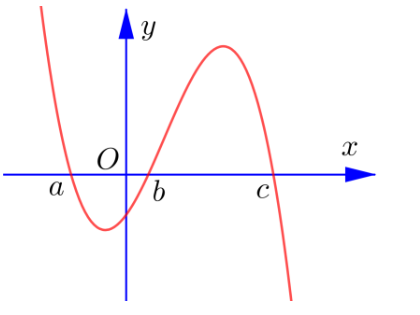 Trong mỗi ý ở câu sau, hãy chọn đúng hay sai.
- Sai. Từ đồ thị của hàm số $y=f'(x)$, ta thấy trên khoảng $(a;b)$ đồ thị hàm số $y=f'(x)$ nằm dưới trục hoành nên với $\forall x \in (-\infty;a)$ $f'(x)<0$.
- Sai. Từ đồ thị của hàm số $y=f'(x)$, ta thấy trên khoảng $(a;b)$ đồ thị hàm số $y=f'(x)$ nằm dưới trục hoành và trên khoảng $(b;c)$ đồ thị hàm số $y=f'(x)$ nằm trên trục hoành nên với $\forall x \in (a;b)$ $f'(x)<0$ và với $\forall x \in (b;c)$ $f'(x)>0$.
- Đúng. Từ đồ thị của hàm số $y=f'(x)$, ta thấy trên khoảng $(b;c)$ đồ thị hàm số $y=f'(x)$ nằm trên trục hoành nên hàm số đồng biến trên khoảng $(b;c)$.
- Sai. Từ đồ thị của hàm số $y=f'(x)$, ta thấy trên khoảng $(c;+\infty)$ đồ thị hàm số $y=f'(x)$ nằm trên trục hoành nên hàm số nghịch biến trên khoảng $(c;+\infty)$.
Câu 13. Cho hàm số bậc bốn $y=f(x)$. Hàm số $y=f'(x)$ có đồ thị như hình dưới đây
- Sai, vì dựa vào đồ thị thì $f'(x)>0, \forall x \in (-1;1) \cup (2;+\infty)$.
- Đúng, vì dựa vào đồ thị thì $f'(x)>0, \forall x \in (-1;1)$.
- Sai, vì dựa vào đồ thị thì $f'(x)<0, \forall x \in (-\infty;-1) \cup (1;2)$.
- Đúng, vì dựa vào đồ thị thì $f'(x)<0, \forall x \in (1;2)$.
Câu 14. Cho hàm số $y=f(x)=\dfrac{x^2+3x}{x-1}$.
Tập xác định: $D=\mathbb{R} \setminus \{1\}$. $y'=f'(x)=\dfrac{x^2-2x-3}{(x-1)^2}$. $y'=0 \Leftrightarrow \begin{cases} x=-1 \\ x=3 \end{cases}$. Bảng biến thiên:
- Từ bảng biến thiên suy ra mệnh đề sai.
- Mệnh đề đúng.
- Hàm số chỉ có hai điểm cực trị là $x=-1$ và $x=3$. Vậy mệnh đề sai.
- Do hàm số không xác định tại $x=1$ thuộc $(-1;3)$ nên mệnh đề sai.
Câu 15. Cho hàm số $y=2^{x^2-3x+\frac{13}{4}}$.
$y=f(x)=2^{x^2-3x+\frac{13}{4}}$. Tập xác định: $D=\mathbb{R}$. Ta có $y'=(2x-3).2^{x^2-3x+\frac{13}{4}}.\ln 2; y'=0 \Leftrightarrow x=\dfrac{3}{2} \in D; f(\dfrac{3}{2})=2$. Bảng biến thiên của hàm số $y=2^{x^2-3x+2}$ Từ bảng biến thiên ta có: Các mệnh đề a) và c) đúng. Các mệnh đề b) và d) sai.
Câu 16. Cho hàm số $y=\log_2(x^2-4x+5)$ có đồ thị là (C).
- Đúng. Điều kiện xác định: $x^2-4x+5>0$ (luôn đúng với mọi $x \in \mathbb{R}$). Vậy hàm số có tập xác định là $D=\mathbb{R}$.
- Sai. Ta có $y'=\dfrac{2x-4}{(x^2-4x+5)\ln 2}$. Do $y'>0 \Leftrightarrow x>2$ nên hàm số đồng biến trên khoảng $(2;+\infty)$.
- Đúng. Ta có bảng biến thiên Suy ra hàm số đạt cực tiểu tại $x=2$.
- Sai. Đồ thị hàm số (C) có điểm cực tiểu là $M(2;0)$ và cắt đường thẳng $(d):y=1$ tại hai điểm $A(x_1;1), B(x_2;1)$ với $x_1, x_2$ là nghiệm của phương trình: $\log_2(x^2-4x+5)=1 \Leftrightarrow x^2-4x+5=2 \Leftrightarrow x^2-4x+3=0 \Leftrightarrow \begin{cases} x=1 \\ x=3 \end{cases} \Rightarrow A(1;1), B(3;1)$. Khi đó $\vec{MA}=(-1;1), \vec{MB}=(1;1) \Rightarrow \vec{MA}.\vec{MB}=0$. Suy ra tam giác MAB vuông tại M. Do đó, bán kính đường tròn ngoại tiếp tam giác MAB là $R=\dfrac{AB}{2}=1$.
Câu 17. Cho hàm số $y = \dfrac{x-1}{x+m}$. Xét tính đúng sai của các mệnh đề sau
Ta có hàm số $y=\dfrac{x-1}{x+m}$ có tập xác định $D=\mathbb{R} \setminus \{-m\}$. Ta có $f'(x)=\dfrac{m+1}{(x+m)^2}$.
- Sai: Hàm số đồng biến trên từng khoảng xác định khi $m+1>0 \Leftrightarrow m>-1$.
- Đúng: Hàm số đồng biến trên khoảng $(-1;+\infty)$ $\Leftrightarrow \begin{cases} m+1>0 \\ -m \notin (-1;+\infty) \end{cases} \Leftrightarrow \begin{cases} m>-1 \\ -m \le -1 \end{cases} \Leftrightarrow m \ge 1$.
- Sai: Hàm số đồng biến trên khoảng $(-\infty;-5)$ $\Leftrightarrow \begin{cases} m+1>0 \\ -m \notin (-\infty;-5) \end{cases} \Leftrightarrow \begin{cases} m>-1 \\ -m \ge -5 \end{cases} \Leftrightarrow -1 < m \le 5$.
- Đúng: Hàm số đồng biến trên khoảng $(-2;7)$ $\Leftrightarrow \begin{cases} m+1>0 \\ -m \notin (-2;7) \end{cases} \Leftrightarrow \begin{cases} m>-1 \\ m \ge 2 \\ m \le -7 \end{cases} \Leftrightarrow m \ge 2$.
Câu 18. Cho hàm số $y=f(x)$ có bảng biến thiên như sau:
- Sai. Hàm số $y=f(x)$ đồng biến trên các khoảng $(-\infty;0)$ và $(3;+\infty)$.
- Đúng. Hàm số $y=f(x)$ nghịch biến trên khoảng $(0;3)$.
- Sai. Hàm số $y=f(x)$ đạt cực đại tại $x=0$.
- Đúng. Giá trị cực tiểu của hàm số $y=f(x)$ là $y=-4$.
Câu 19. Cho hàm số bậc ba $y=f(x)$ có đồ thị là đường cong như hình vẽ sau
- Sai. Hàm số $y=f(x)$ đồng biến trên các khoảng $(-\infty;-1)$ và $(1;+\infty)$.
- Đúng. Giá trị cực đại là $y=3$, giá trị cực tiểu là $y=-1$. Do đó tổng giá trị cực đại và giá trị cực tiểu của hàm số đã cho là $3-1=2$.
- Đúng. Hàm số $y=f(x)$ có hai cực trị là $x=\pm 1$.
- Sai. Gọi $d:y=ax+b$ là đường thẳng qua hai điểm cực trị $A(-1;3), B(1;-1)$. $A,B \in d \Rightarrow \begin{cases} -a+b=3 \\ a+b=-1 \end{cases} \Rightarrow \begin{cases} a=-2 \\ b=1 \end{cases} \Rightarrow d:y=-2x+1$.
Câu 20. Cho hàm số bậc bốn trùng phương $f(x)$ có bảng biến thiên như sau:
- Sai. Vì hàm số nghịch biến trên $(0;1)$.
- Đúng. Ta có: hai điểm cực tiểu lần lượt có tọa độ $(-1;-1)$ và $(1;-1)$. Do đó độ dài nối 2 điểm cực tiểu là $\sqrt{(1+1)^2+(-1+1)^2}=2$.
- Sai. Ta có: $[f(2x)]'=2f'(2x)$. $[f(2x)]'=0 \Leftrightarrow \begin{cases} x=-\dfrac{1}{2} \\ x=0 \\ x=\dfrac{1}{2} \end{cases}$. Do đó, hàm số đồng biến trên $(\dfrac{1}{2};1)$.
- Đúng. Giả sử $f(x)=ax^4+bx^2+c$. Từ $\begin{cases} f'(0)=0 \\ f(0)=1 \\ f'(\pm 1)=0 \\ f(\pm 1)=0 \end{cases} \Leftrightarrow \begin{cases} a=2 \\ b=-4 \\ c=1 \end{cases}$. Suy ra $f(x)=2x^4-4x^2+1$. Khi đó $y=\dfrac{1}{x}[2x^4-4x^2]^4=2^4.x^4.(x^2-2)^4$. Có $y'=2^4.4.x^3.(x^2-2)^3.(3x^2-2)$. Và $y'=0 \Leftrightarrow x=0$ (nghiệm bội lẻ); $x=\pm \sqrt{2}$ (nghiệm bội lẻ); $x=\pm \sqrt{\dfrac{2}{3}}$. Do đó, hàm số y có 5 cực trị.
Câu 21. Cho hàm số $y=f(x)$ có đạo hàm $f'(x)=(x+1)e^x$.
- Đúng.
- Sai. Vì không đủ cơ sở để xác định hàm số $f(x)$ nên không xác định được giá trị cực tiểu.
- Sai. Ta có: $[f(x^2)]'=2xf'(x^2)=2x(x^2+1)e^{x^2}$. $[f(x^2)]'=0 \Leftrightarrow x=0$. Do đó, hàm số nghịch biến trên $(-1;0)$.
- Sai. Ta có $g'(x)=\dfrac{1}{x}f'(\ln x)-2mx+4m=\dfrac{1}{x}(\ln x+1)e^{\ln x}-2mx+4m=\ln x+1-2mx+4m$. Hàm số nghịch biến trong khoảng $(e;e^{2024})$ khi và chỉ khi $\ln x+1-mx+4m \le 0, \forall x \in (e;e^{2024})$. $\Leftrightarrow 2m \ge \dfrac{\ln x+1}{x-2}, \forall x \in (e;e^{2024})$. Xét hàm số $g(x)=\dfrac{\ln x+1}{x-2}, x \in (e;e^{2024})$. Ta có $g'(x)=\dfrac{\dfrac{1}{x}(x-2)-(\ln x+1)}{(x-2)^2}=\dfrac{1-x\ln x}{x(x-2)^2}$. $g'(x)<0, \forall x \in (e;e^{2024})$. Bảng biến thiên: Quan sát bảng biến thiên ta có $2m \ge \dfrac{2}{e-2} \Leftrightarrow m \ge \dfrac{1}{e-2} \Rightarrow m \ge 2$. Do $m \in [-2024;2025], m \in \mathbb{Z}$ nên $m \in \{2;3;...;2025\}$. Vậy có 2024 giá trị nguyên của tham số $m$.
Câu 22. Cho hàm số $y=2x^3-3(2m+1)x^2+6m(m+1)x+1$. Xét tính đúng sai của các mệnh đề sau
Tập xác định $D=\mathbb{R}$. Ta có $y'=6x^2-6(2m+1)x+6m(m+1)$.
- Đúng: Để hàm số nghịch biến trên $\mathbb{R} \Rightarrow y' \le 0, \forall x \in \mathbb{R}$ $\Leftrightarrow \begin{cases} a<0 \\ \Delta \le 0 \end{cases} \Leftrightarrow \begin{cases} 6<0 \text{(vô lí)} \\ \Delta \le 0 \end{cases}$. Vậy không tồn tại $m$ để hàm số đồng biến trên $\mathbb{R}$.
- Sai: Để hàm số đồng biến trên $\mathbb{R} \Rightarrow y' \ge 0, \forall x \in \mathbb{R}$ $\Leftrightarrow \Delta \le 0 \Leftrightarrow (2m+1)^2-4m(m+1) \le 0 \Leftrightarrow 1 \le 0$ (vô lí). Vậy không tồn tại $m$ để hàm số đồng biến trên $\mathbb{R}$.
- Sai: Vì $a=2>0$ nên hàm số đã cho nghịch biến trên một đoạn khi và chỉ khi phương trình $y'=0$ có hai nghiệm phân biệt $\Leftrightarrow \Delta > 0 \Leftrightarrow (2m+1)^2-4m(m+1)>0 \Leftrightarrow 1>0 \Leftrightarrow m \in \mathbb{R}$. Theo định lý Vi-ét, ta có $\begin{cases} x_1+x_2 = 2m+1 \\ x_1x_2=m(m+1) \end{cases}$. Để hàm số đã cho nghịch biến trên đoạn có độ dài bằng 2 thì $|x_1-x_2|=2 \Leftrightarrow (x_1+x_2)^2-4x_1x_2=4$ $\Leftrightarrow (2m+1)^2-4m(m+1)=4 \Leftrightarrow 1=4$ (vô lý). Vậy không tồn tại $m$ để hàm số đã cho nghịch biến trên đoạn có độ dài bằng 2.
- Đúng: Để hàm số đã cho đồng biến trên khoảng $(2;+\infty)$ thì ta xét hai trường hợp Trường hợp 1: Hàm số đồng biến trên $\mathbb{R} \Rightarrow y' \ge 0, \forall x \in \mathbb{R}$ $\Leftrightarrow \Delta \le 0 \Leftrightarrow (2m+1)^2-4m(m+1) \le 0 \Leftrightarrow 1 \le 0$ (vô lí). Trường hợp 2: Phương trình $y'=0$ có hai nghiệm phân biệt thỏa mãn $x_1 < x_2 \le 2 \Leftrightarrow x_1-2 < x_2-2 \le 0 \Leftrightarrow \begin{cases} \Delta > 0 \\ x_1+x_2-4 < 0 \\ (x_1-2)(x_2-2) \ge 0 \end{cases} \Leftrightarrow \begin{cases} 1>0 \\ 2m-3<0 \\ m(m+1)-2(2m+1)+4 \ge 0 \end{cases} \Leftrightarrow \begin{cases} m \in \mathbb{R} \\ m < \dfrac{3}{2} \\ m \in (-\infty;1] \cup [2;+\infty) \end{cases} \Leftrightarrow m \in (-\infty;1]$. Vậy $m \le 1$ thì hàm số đã cho đồng biến trên khoảng $(2;+\infty)$.
Câu 23. Cho một tấm tôn hình chữ nhật có kích thước $80(cm) \times 50(cm)$, người ta cắt đi ở bốn góc của tấm tôn bốn hình vuông bằng nhau để khi gập lại được một chiếc hộp (không nắp). Gọi cạnh hình vuông được cắt đi là $x(cm)$. Xét tính đúng sai của các mệnh đề sau 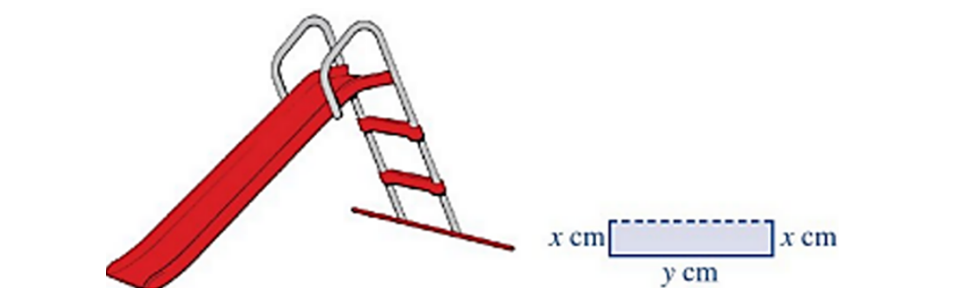
Gọi cạnh hình vuông được cắt đi là $x(cm)$, $0
Câu 24. Cho hàm số $y=x^3-3mx^2+3(2m-1)x+5m-4$. Xét tính đúng sai của các mệnh đề sau
Tập xác định $D=\mathbb{R}$. Ta có $y'=3x^2-6mx+(6m-3)$.
- Đúng: Để hàm số đồng biến trên $\mathbb{R} \Leftrightarrow y' \ge 0, \forall x \in \mathbb{R}$ $\Leftrightarrow \begin{cases} a>0 \\ \Delta' \le 0 \end{cases} \Leftrightarrow 9m^2-3(6m-3) \le 0 \Leftrightarrow m=1$. Vậy $m=1$ hàm số đồng biến trên $\mathbb{R}$.
- Sai: Ta có $y'=3x^2-6mx+(6m-3)$ và do $a=3>0$ nên không tồn tại $m$ để hàm số nghịch biến trên $\mathbb{R}$.
- Đúng: Vì $a=3>0$ nên hàm số đã cho đồng biến trên khoảng $(2;3)$ $\Leftrightarrow y' \ge 0, \forall x \in (2;3) \Leftrightarrow 3x^2-6mx+(6m-3) \ge 0, \forall x \in (2;3)$ $\Leftrightarrow m(2-2x) \ge 1-x^2, \forall x \in (2;3)$ $\Leftrightarrow m \le \dfrac{1-x^2}{2-2x}, \forall x \in (2;3)$ $\Leftrightarrow m \le \dfrac{1+x}{2} < \dfrac{3}{2}, \forall x \in (2;3)$.
- Sai: Để hàm số đã cho đồng biến trên khoảng $(-\infty;5)$ thì ta xét hai trường hợp Trường hợp 1: Hàm số đồng biến trên $\mathbb{R} \Leftrightarrow y' \ge 0, \forall x \in \mathbb{R}$ $\Leftrightarrow \begin{cases} a<0 \\ \Delta' \le 0 \end{cases} \Leftrightarrow 9m^2-18m+9 \le 0 \Leftrightarrow m=1$. Trường hợp 2: Phương trình $y'=0$ có hai nghiệm phân biệt thỏa mãn $5 \le x_1 < x_2 \Rightarrow 0 \le x_1-5 < x_2-5 \Leftrightarrow \begin{cases} \Delta > 0 \\ x_1+x_2-10 > 0 \\ x_1x_2-5(x_1+x_2)+25 \ge 0 \end{cases}$ $\Leftrightarrow \begin{cases} 9m^2-18m+9>0 \\ 2m-10>0 \\ 2m-1-5.2m+25 \ge 0 \end{cases} \Leftrightarrow \begin{cases} m \in \mathbb{R} \setminus \{1\} \\ m>5 \\ m \le 3 \end{cases} \Leftrightarrow m \in \emptyset$. Vậy $m=1$ thì hàm số đã cho đồng biến trên khoảng $(-\infty;5)$.
Câu 25. Cho hàm số $y=f(x)$ có bảng biến thiên như sau: 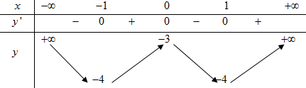
- Đúng: Điểm cực đại của hàm số là $x=0$.
- Sai: Giá trị cực tiểu của hàm số bằng $-4$.
- Sai: Hàm số $y=f(x)$ có 3 cực trị và đồ thị hàm số $y=f(x)$ cắt trục hoành tại 2 điểm phân biệt nên hàm số $y=|f(x)|$ có 5 cực trị.
- Sai: Vì hàm số $y=f(x)$ là hàm trùng phương nên $y=f(|x|)=f(x)$ có 3 cực trị.
Câu 26. Cho hàm số $f(x)$ liên tục trên $\mathbb{R}$ và có bảng xét dấu của $f'(x)$ như sau: 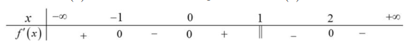
Ta có BBT của hàm số $y=f(x)$
- Sai: Điểm cực đại của hàm số là $x=0$.
- Đúng: Hàm số có 3 cực trị.
- Đúng: Hàm số $y=f(|x|)$ có 3 cực trị.
- Sai: Vì số cực trị của hàm số $y=f(-2x+1)$ bằng số cực trị của hàm số $y=f(x)$.
Câu 27. Cho hàm số bậc ba $y=f(x)$ có đồ thị như hình vẽ. 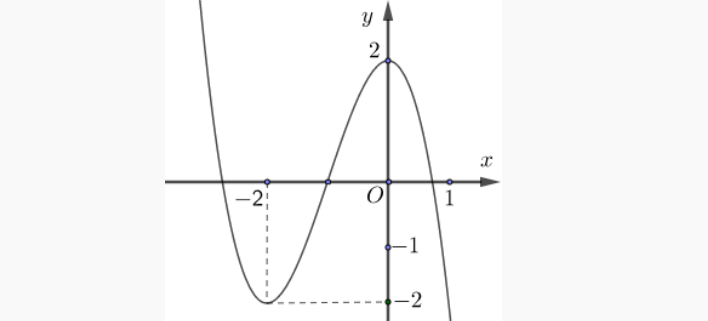
- Sai: Điểm cực đại của hàm số là $x=0$.
- Đúng: Hàm số có hai cực trị.
- Đúng: Hàm số $y=f(x)$ có 2 cực trị và đồ thị hàm số $y=f(x)$ cắt trục hoành tại 3 điểm phân biệt nên hàm số $y=|f(x)|$ có 5 cực trị.
- Đúng: Từ đồ thị ta có hàm số bậc ba $y=f(x)$ có hai điểm cực trị $x=-2;x=0$. Đặt $u=-x^2+x$. Ta có $u'=-2x+1=0 \Leftrightarrow x=\dfrac{1}{2}$. Bảng biến thiên của hàm số $y=f(-x^2+x)$ Vậy hàm số $y=f(-x^2+x)$ có 3 điểm cực tiểu.
Câu 28. Cho hàm đa thức bậc năm $y=f(x)$ và đồ thị hàm số $y=f'(x)$ trên $\mathbb{R}$ như hình vẽ. 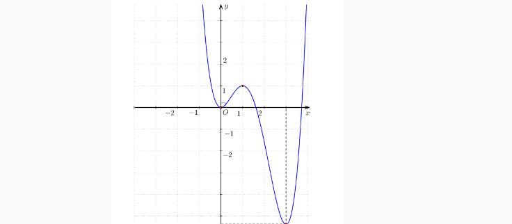
Ta thấy đồ thị hàm số cắt trục hoành tại 3 điểm có hoành độ lần lượt là $0, a, b$. Ta có BBT của hàm số $y=f(x)$
- Sai: Điểm cực đại của hàm số là $x=a$.
- Sai: Hàm số có hai cực trị.
- Đúng: Vì số cực trị của hàm số $y=f(3x-2024)$ bằng số cực trị của hàm số $y=f(x)$.
- Sai: Ta có $g'(x)=f'(x)+2$. Phương trình $g'(x)=0 \Leftrightarrow f'(x)=-2$ có đúng 2 nghiệm bội lẻ nên hàm số $g(x)=f(x)+2x$ có đúng 2 cực trị.
Câu 29. Cho hàm số $y=f(x)$ có bảng biến thiên như sau
 Xét tính đúng sai của các mệnh đề sau:
Xét tính đúng sai của các mệnh đề sau:
- Đúng.
- Sai. Giá trị cực đại của hàm số $y=f(x)$ là $-2$.
- Đúng. Từ BBT của hàm số $y=f(x)$ ta suy ra được BBT của hàm số $y=|f(x)|$ Ta thấy hàm số có 3 điểm cực tiểu.
- Sai. Ta có $g(x)=f^3(x)+3f^2(x)+2020$ $\Rightarrow g'(x)=f'(x)[3f^2(x)+6f(x)] = 3f'(x)f(x)[f(x)+2]$. Ta có $g'(x)=0 \Leftrightarrow \begin{cases} f'(x)=0 \\ f(x)=0 \text{ (1)} \\ f(x)=-2 \end{cases}$. Dựa vào BBT của hàm số $y=f(x)$ ta thấy PT: $f'(x)=0 \Leftrightarrow x=0; x=\pm 1$ $f(x)=0$ có 2 nghiệm $x_1;x_2$ là hai nghiệm đơn $f(x)=-2$ có 2 nghiệm kép là $x=\pm 1$. Vậy phương trình $g'(x)=0$ có 5 nghiệm đơn nên hàm số $y=g(x)$ có 5 điểm cực trị.
Câu 30. Cho hàm số $f(x) = ax^3 + bx^2 + cx + d$ $(a,b,c,d \in \mathbb{R})$ có bảng biến thiên như sau 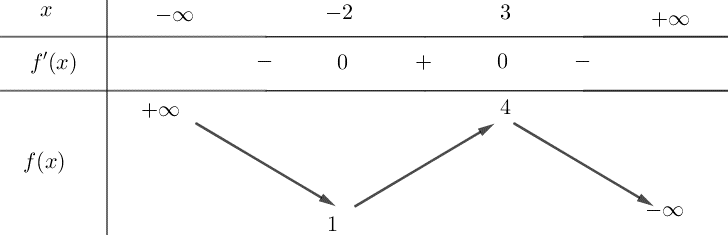
- Sai: Từ bảng biến thiên suy ra hàm số đạt cực đại tại điểm $x=3$.
- Đúng: Từ bảng biến thiên suy ra Giá trị cực tiểu của hàm số là $y=1$.
- Đúng: Hàm số $y=f(x)$ đồng biến trên khoảng $(-2;3)$ suy ra $(-1;1) \subset (-2;3)$.
- Đúng: Ta có: $f(x) = ax^3+bx^2+cx+d$ $(a,b,c,d \in \mathbb{R}) \Rightarrow f'(x) = 3ax^2+2bx+c$. Đồ thị hàm số $f(x)$ có hai điểm cực trị $A(-2;1), B(3;4)$ nên ta có hệ: $\begin{cases} -8a+4b-2c+d=1 \\ 27a+9b+3c+d=4 \\ 12a-4b+c=0 \\ 27a+6b+c=0 \end{cases} \Leftrightarrow \begin{cases} a = \dfrac{6}{125} \\ b = -\dfrac{9}{125} \\ c = -\dfrac{108}{125} \\ d = \dfrac{257}{125} \end{cases}$. Trong các số $a,b,c,d$ có 3 số dương.